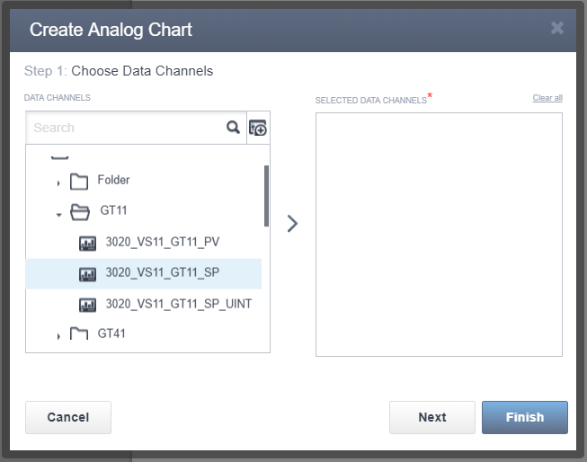
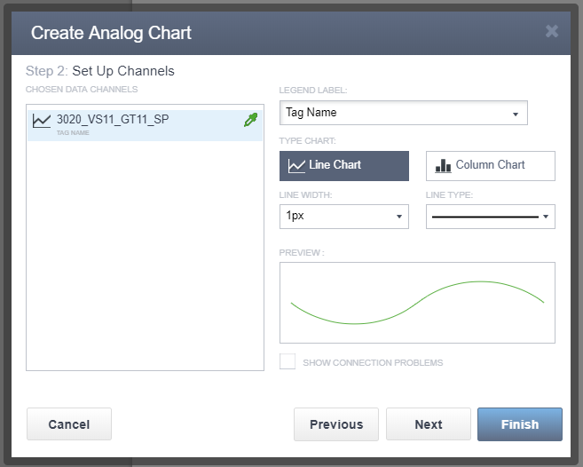
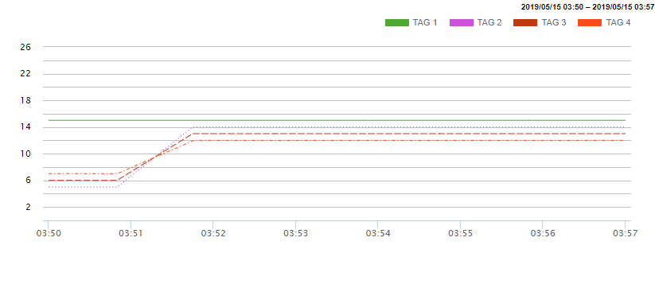
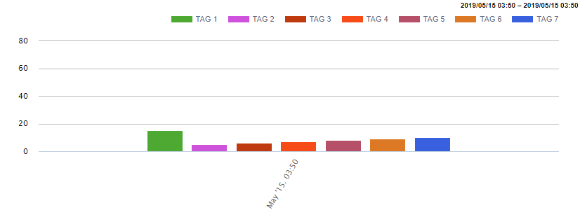
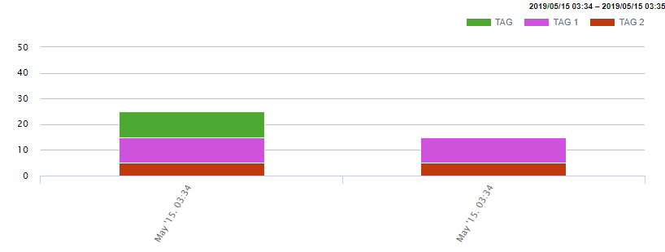
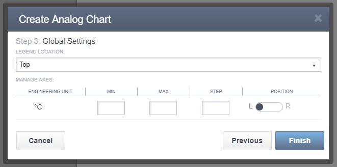

Charts are one of the common tools used for data presentation in reports. This task shows you how to associate an analogue chart with tag data, configure and format an analogue chart.
To create an analogue chart in the Report editor perform the following steps:
Click the Analog Chart icon .
Choose one or several tags in the following contextual menu

Figure 1. Create Analog Chart - Step 1
Set up the data channel.

Figure 2. Create Analog Chart - Step 2
Legend label has three available options:
Tag name option is for displaying the name of the tag which was set in IDE.
Description option is for displaying the description of the tag which was set in IDE.
Custom option allows the user to set own caption of the legend.
It is possible to choose one of the two chart forms:
Line chart
Column chart
You can set the colour of the line or the column. Also, it is possible to set up the width of the line and its type.

Figure 3. A line chart example
The editor supports displaying seven different columns at the same time.

Figure 4. A column chart example
Each column can be associated with several tags at the same time.

Figure 5. A column chart example, type 2
Configure axes and location of the legend.

Figure 6. Create Analog Chart - Step 3
Parent article:
Report editor
Here you can find brief information about the Report editor.